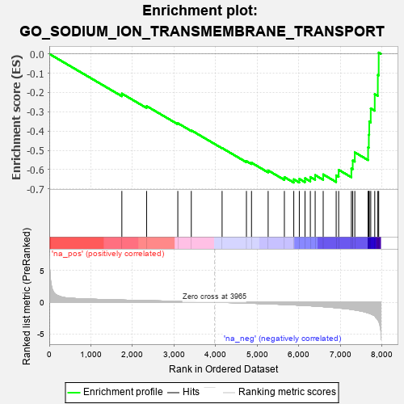
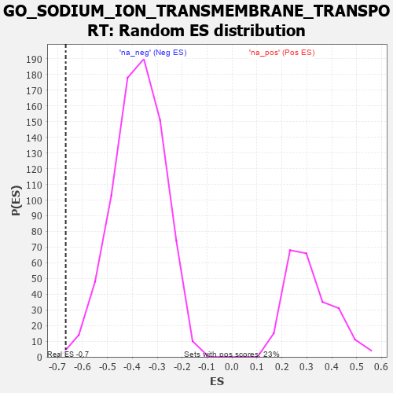

| | | Dataset | 7d |
| Phenotype | NoPhenotypeAvailable |
| Upregulated in class | na_neg |
| GeneSet | GO_SODIUM_ION_TRANSMEMBRANE_TRANSPORT |
| Enrichment Score (ES) | -0.6671153 |
| Normalized Enrichment Score (NES) | -1.7716857 |
| Nominal p-value | 0.0025974025 |
| FDR q-value | 0.020463264 |
| FWER p-Value | 0.6 |
Table: GSEA Results Summary

Fig 1: Enrichment plot: GO_SODIUM_ION_TRANSMEMBRANE_TRANSPORT
Profile of the Running ES Score & Positions of GeneSet Members on the Rank Ordered List
| PROBE | GENE SYMBOL | GENE_TITLE | RANK IN GENE LIST | RANK METRIC SCORE | RUNNING ES | CORE ENRICHMENT | | 1 | SLMAP | | | 1744 | 0.346 | -0.2058 | No |
| 2 | ANO6 | | | 2339 | 0.255 | -0.2705 | No |
| 3 | CHP1 | | | 3089 | 0.138 | -0.3593 | No |
| 4 | KCNK1 | | | 3413 | 0.088 | -0.3964 | No |
| 5 | WNK3 | | | 4153 | -0.034 | -0.4881 | No |
| 6 | CNNM4 | | | 4738 | -0.147 | -0.5558 | No |
| 7 | DLG1 | | | 4860 | -0.169 | -0.5643 | No |
| 8 | SCN1A | | | 5260 | -0.261 | -0.6042 | No |
| 9 | WNK1 | | | 5650 | -0.362 | -0.6388 | No |
| 10 | ASIC4 | | | 5876 | -0.427 | -0.6502 | Yes |
| 11 | NETO2 | | | 6009 | -0.475 | -0.6480 | Yes |
| 12 | SCN9A | | | 6146 | -0.518 | -0.6446 | Yes |
| 13 | STK39 | | | 6274 | -0.563 | -0.6383 | Yes |
| 14 | TRPM4 | | | 6390 | -0.612 | -0.6285 | Yes |
| 15 | ARF1 | | | 6583 | -0.701 | -0.6249 | Yes |
| 16 | HCN1 | | | 6895 | -0.865 | -0.6298 | Yes |
| 17 | SCN4A | | | 6955 | -0.910 | -0.6012 | Yes |
| 18 | HCN4 | | | 7260 | -1.134 | -0.5945 | Yes |
| 19 | ASIC5 | | | 7293 | -1.160 | -0.5525 | Yes |
| 20 | GPD1L | | | 7343 | -1.215 | -0.5106 | Yes |
| 21 | HCN2 | | | 7662 | -1.668 | -0.4845 | Yes |
| 22 | TRPM2 | | | 7680 | -1.712 | -0.4189 | Yes |
| 23 | ANK3 | | | 7690 | -1.740 | -0.3511 | Yes |
| 24 | ASIC1 | | | 7726 | -1.838 | -0.2826 | Yes |
| 25 | PKD2 | | | 7822 | -2.167 | -0.2087 | Yes |
| 26 | CAV3 | | | 7896 | -2.739 | -0.1094 | Yes |
| 27 | ASIC2 | | | 7917 | -2.995 | 0.0068 | Yes |
Table: GSEA details [plain text format]

Fig 2: GO_SODIUM_ION_TRANSMEMBRANE_TRANSPORT: Random ES distribution
Gene set null distribution of ES for GO_SODIUM_ION_TRANSMEMBRANE_TRANSPORT